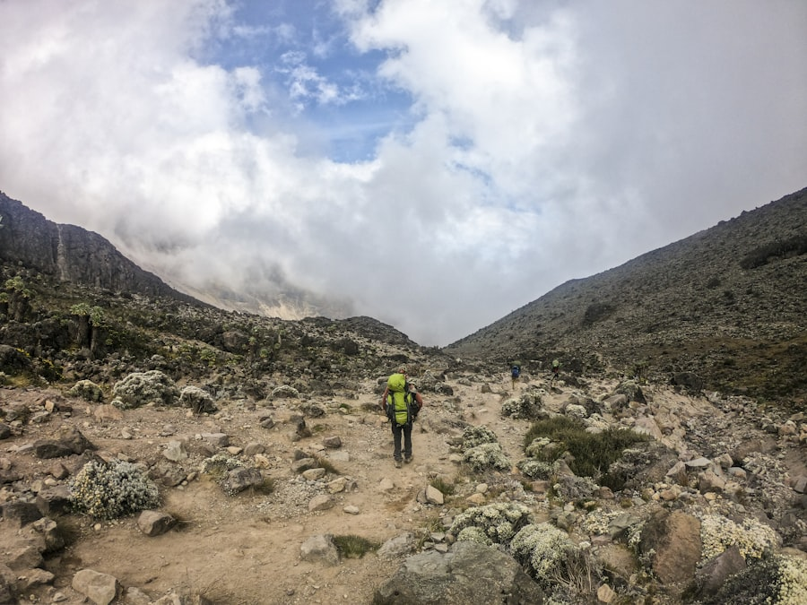
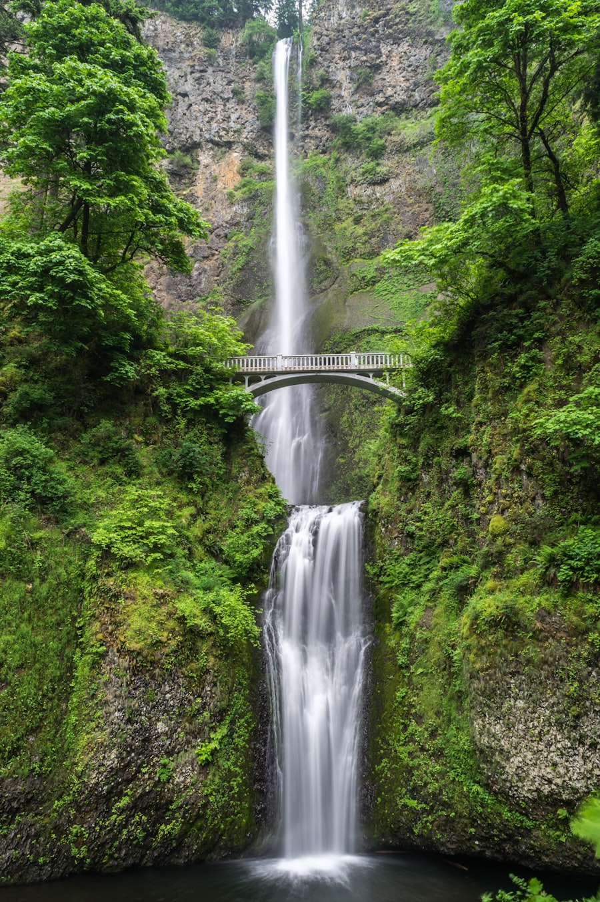
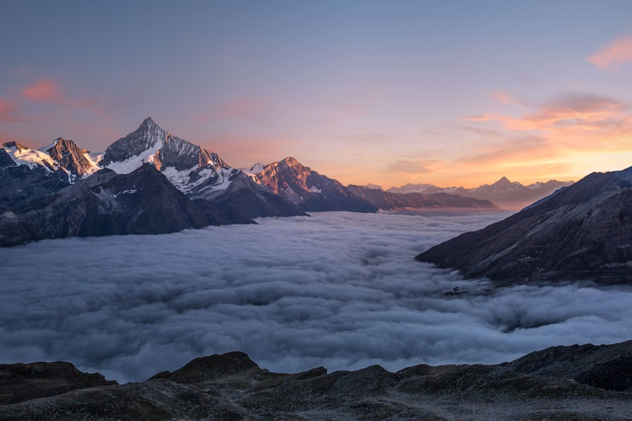
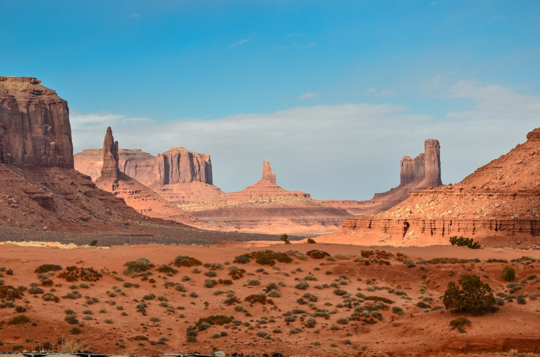

Welcome to Beautiful Pakistan
Discover the wonders of Pakistan!

Welcome to the ultimate digital travel companion for exploring Pakistan. From the towering peaks of the Karakoram range to the vibrant historical heritage of the plains, this country offers unparalleled experiences for every kind of traveler.
The image above shows the kind of mountain scenery that makes Pakistan famous around the world. Snow-covered slopes, open skies, and quiet landscapes welcome travelers who want adventure, photography, and fresh mountain air.
Whether you love mountains, history, food, or peaceful nature, Pakistan has something special waiting for you. Use this website to plan your trip, learn about local culture, and discover the best places to visit.
Travel tip: Carry plenty of H2O and remember that K2 is the 2nd highest mountain in the world.
Important Note: Hospitality is deeply rooted in local customs. You will often find yourself being treated to free traditional chai by friendly locals!
Featured Destination: The Northern Areas
The Northern Areas are the most popular travel region in Pakistan. Places like Hunza, Skardu, Fairy Meadows, and Naltar are famous for snow-covered mountains, clear rivers, green valleys, and friendly local culture.

This photo captures the beauty of Hunza Valley — one of Pakistan's most loved destinations. Visitors come here for soft morning light on the mountains, peaceful village walks, and unforgettable views of peaks like Rakaposhi and Ultar Sar.
In Hunza, you can visit old forts, sit by blue lakes, taste local fruits in season, and feel the warmth of mountain hospitality. It is a perfect first stop for travelers who want both nature and culture.
"The Northern Areas of Pakistan are a paradise for nature lovers and adventure seekers. From the majestic peaks to the serene valleys, every corner is a photographer's dream."
Why Visit the North?

Northern Pakistan is home to some of the highest and most dramatic mountain ranges on Earth. The peaks in pictures like this remind travelers why Gilgit-Baltistan is called a dreamland for hikers, climbers, and landscape photographers.
- World-class mountains: See views of Rakaposhi, Nanga Parbat, and other famous peaks.
- Adventure travel: Perfect for hiking, jeep safaris, camping, and photography.
- Scenic roads: The Karakoram Highway offers some of the most beautiful drives in the world.
- Local culture: Experience peaceful villages, traditional dress, and warm hospitality.

Away from the rocky peaks, the north also offers soft green valleys filled with trees, rivers, and open walking trails. These scenes are ideal for families, slow travel, picnics, and travelers who want calm nature more than extreme adventure.
Spring and summer make these valleys even more beautiful, with fresh greenery, flowing water, and cool breezes that feel refreshing after city life.
Culture & Food to Try in the Northern Areas
- Local hospitality: Expect warm welcomes—locals often share chai and simple homemade snacks.
- Traditional flavors: Look out for dishes like Chapshoro and local breads depending on the region.
- Festivals & music: Community events often include local folk music and cultural performances.
- Fresh produce: In season, try local apricots, cherries, and walnuts from Hunza and nearby valleys.
Want to explore more places? Visit our full Destinations page for Hunza, Skardu, Lahore, Islamabad, and Murree.
Popular Places Preview
Pakistan is not only about mountains. Below are more destinations you can visit, each with its own mood, food, and travel style.
Skardu — Lakes, Glaciers & Adventure

Skardu is a top choice for travelers who want big landscapes and outdoor adventure. The photo shows the raw beauty of this region — open valleys, high mountains, and quiet places that feel far from city noise.
Popular experiences include Shangrila Lake, Upper Kachura, Satpara Lake, and trips to Deosai Plains. It is excellent for camping, jeep rides, photography, and multi-day northern tours.
- Best for: Trekking, camping, and nature photography
- Best time: May to September
- Suggested stay: 4 to 6 days
Lahore — History, Culture & Street Food

Lahore is one of Pakistan's most exciting cultural cities. This street-food scene shows why travelers fall in love with Lahore so quickly — colorful markets, busy evenings, and unforgettable flavors.
Along with food, Lahore offers powerful history. You can explore Lahore Fort, Badshahi Mosque, Shalimar Gardens, and old bazaars filled with crafts, sweets, and local life.
- Best for: Food tours, heritage walks, and city nights
- Must try: Biryani, nihari, kebabs, and traditional sweets
- Best time: October to March
- Suggested stay: 2 to 4 days
Islamabad — Calm Parks & Modern City Views

Islamabad is Pakistan's peaceful capital and a comfortable base for many travelers. The city scene above reflects its clean roads, green spaces, and relaxed atmosphere compared with larger busy cities.
It is ideal for families and first-time visitors. Popular stops include Faisal Mosque, Pakistan Monument, Daman-e-Koh, and Saidpur Village. Many people stay here before starting a northern journey.
- Best for: Relaxed city breaks, parks, and short cultural visits
- Best time: March to November
- Suggested stay: 1 to 3 days
Murree — Cool Hills Near Islamabad

Murree is a classic hill-station escape. The misty pine forests and cool slopes in this picture explain why families love it for weekend getaways and short holidays.
Because it is close to Islamabad, Murree is easy to visit without a long northern trip. Tourists enjoy Mall Road, Patriata, and viewpoints like Pindi Point and Kashmir Point. In winter, snow attracts even more visitors.
- Best for: Family trips and short hill holidays
- Best time: May to September; December to February for snow views
- Suggested stay: 1 to 3 days
Quick Trip Planning Insights
Top 3 Must-Visit Regions
- Gilgit-Baltistan: Home to some of the world's highest peaks, including K2. Best for mountains, lakes, and adventure.
- Punjab: Rich in history and culture, with vibrant cities like Lahore and ancient heritage sites.
- Sindh: Known for coastal beauty, desert landscapes, and the historic city of Karachi.
Essential Travel Items
- Original passport and valid visa (for international travelers)
- Sturdy hiking boots for northern trails
- Modest clothing respecting local cultural guidelines
- Power bank, reusable water bottle, and sunscreen
- Warm jacket for evenings in the hills and mountains
Best Season Guide
- April to October: Ideal for Hunza, Skardu, Murree, and most northern trips.
- October to March: Better for Lahore, Islamabad, and city sightseeing in milder weather.
- Winter (Dec-Feb): Great for snow views in Murree and nearby hill stations.
Geographical Zones
Pakistan is divided into several geographical zones, each offering unique experiences. The pictures below help you quickly understand the different travel moods of the country.
Mountains

The northern regions boast the majestic Karakoram and Himalayan ranges. These mountains are perfect for trekking, camping, jeep travel, and travelers who want dramatic views every day.
Plains

The fertile plains of Punjab and Sindh are rich in agriculture, cities, and history. Historic forts, old streets, museums, and busy bazaars make this zone ideal for cultural sightseeing.
Deserts

The Thar Desert and other desert areas offer wide open landscapes, traditional culture, music, and a completely different travel feeling from the mountains. Sunset views and camel rides are popular experiences.
Coastal Areas

Pakistan's coastline along the Arabian Sea is perfect for travelers who want beaches, seafood, sea breeze, and a relaxed coastal holiday. These areas offer a soft contrast to the high northern mountains.
Ready to start planning? Explore popular destinations or learn more about Pakistani culture and food.